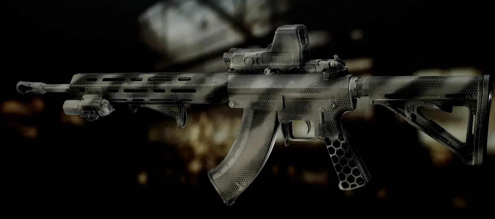
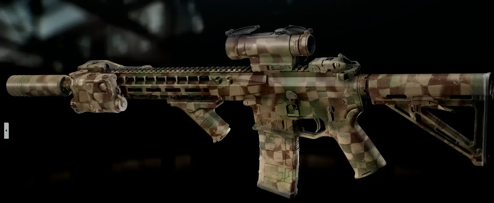
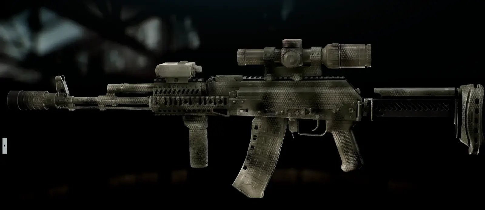
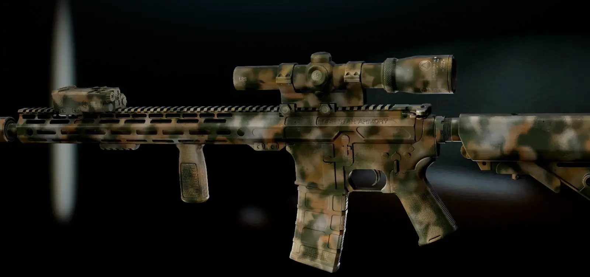
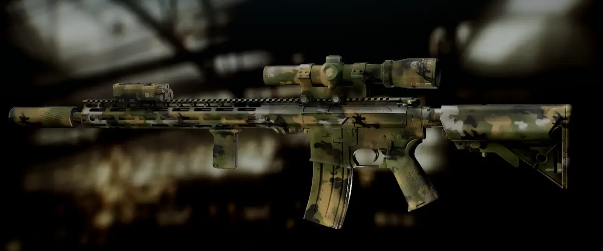
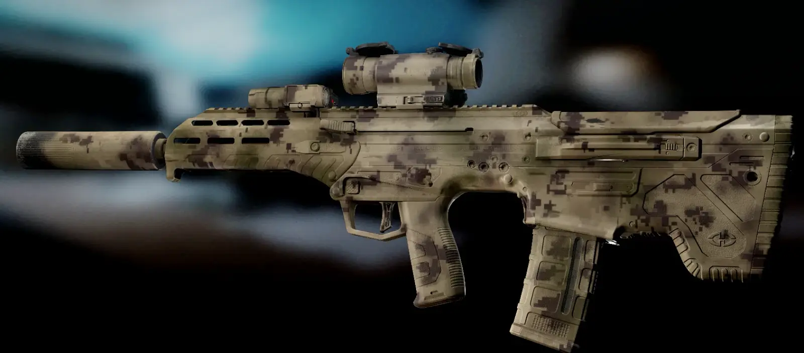
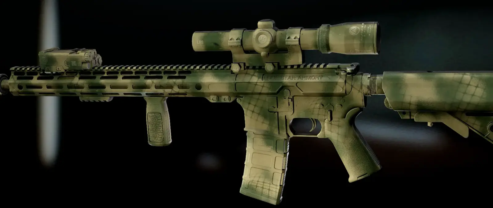

Rattle Can Camos
- Downloads
- 1,407
Realistic rattle can camos I painted up that I referenced from weapon images from Ukraine and other theaters of war plus stuff I’ve done with my own rifle. Will probably add more for they don’t take long to make. I made the Textures where if you just use my mask only they’ll look good on bot weapons.
Currently 35 schemes to choose from and 11 mask that are just suppose to play nice with the random generation with little chips, scratches, and wear spots to the paint.







Previews of more of the camos here: https://github.com/SligarTheTiger/rattle-can-camos/tree/main/Previews
Version
1.0.4
Added 5 more camos. Mostly stencil focused ones.
Previews here: https://github.com/SligarTheTiger/rattle-can-camos/blob/main/Previews/Spray31%201.0.4.png
Version
1.0.3
Added 5 more camos.
Previews can be viewed here: https://github.com/SligarTheTiger/rattle-can-camos/blob/main/Previews/Spray25%201.0.3.png
Version
1.0.2
Added 3 more camos. Added 2 more mask that show more wear on the paint.
Previews for the new camos here: https://github.com/SligarTheTiger/rattle-can-camos/blob/main/Previews/Spray22%201.0.2.png
Version
1.0.1
Added 3 more camos and 2 more mask. Updated the mask to work better with the current random generation. Some weapons have an off default position of the texture when randomly generated (Shotguns for example, texture sits to low), wish I could fix it with a config or something.
Previews for the new Camos here: https://github.com/SligarTheTiger/rattle-can-camos/blob/main/Previews/Spray19%201.0.1.png
Version
1.0.0
Initial release.